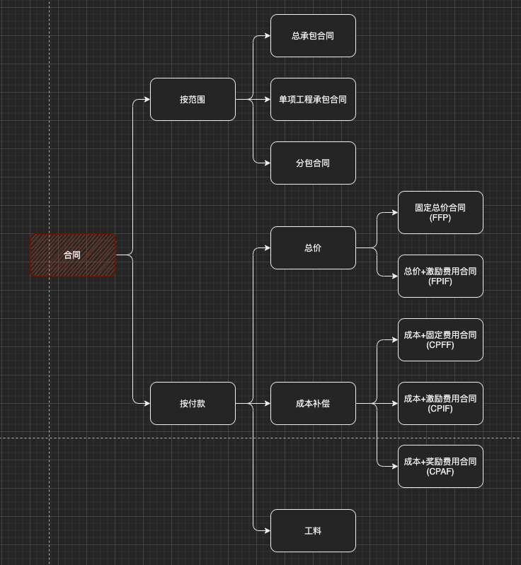
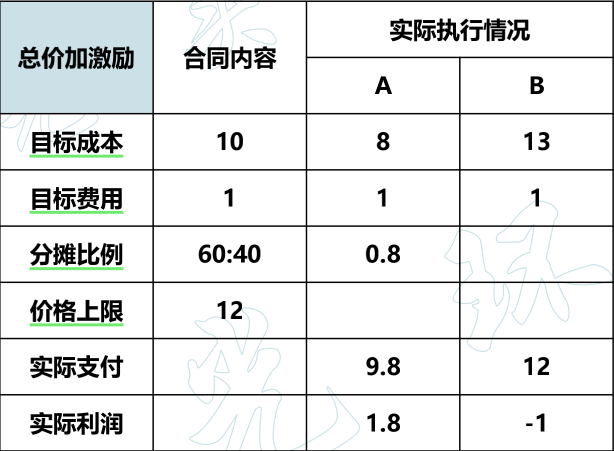
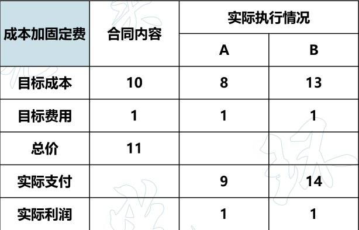
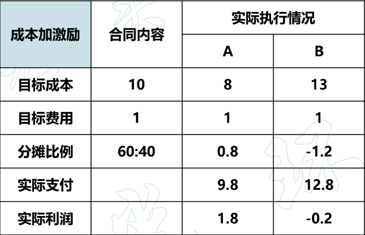
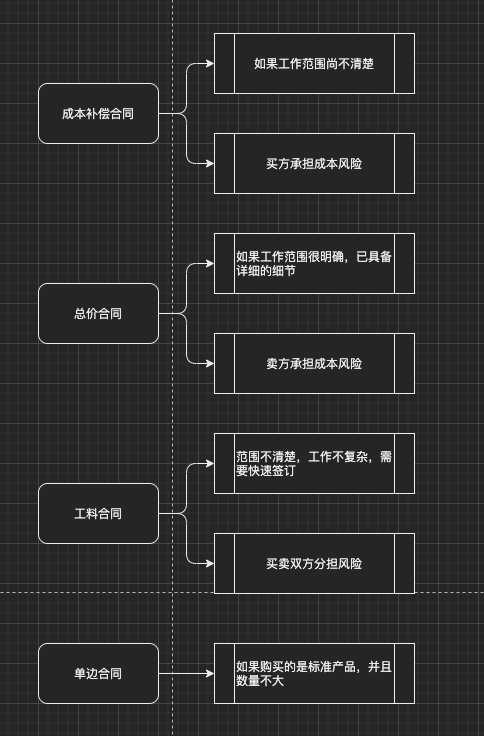

合同
合同的概念
✓ 合同必须包括的要素：
- 合同的成立必须要有两个（含）以上的当事人
- 各方当事人须互相做出意思表示
- 各个意思表示达成一致
✓ 合同的法律特征：
- 合同是一种民事法律行为
- 合同是一种双方或多方或共同的民事法律行为
- 合同以在当事人之间设立、变更、终止财产性的民事权利义务为目的
- 订立、履行合同，应当遵守相关的法律及行政法规
- 合同依法成立，即具有法律约束力
合同分类

按范围
✓ 分为：总承包合同、单项工程承包合同、分包合同
✓ 分包合同 必须同时满足5个条件 ，即：
- 经过买方认可
- 分包的部分必须是项目非主体工作
- 只能分包部分项目，而不能转包整个项目
- 分包方必须具备相应的资质条件
- 分包方不能再次分包
按付款-总价
✓ 为既定产品、服务或成果的采购设定一个总价
✓ 也可以为达到或超过项目目标而规定财务奖励条款
✓ 买方需要准确定义拟采购的产品或服务
✓ 包括：
- 固定总价合同（FFP）
-
总价加激励费用合同（FPIF）

- 目标成本：固定的总价成本
- 目标费用：固定的报酬
- 分摊比例：目标成本-实际执行花费 后，甲乙双方分摊的比例。如果实际费用超出，同样按照该比例，双方共同承担。
- 价格上限：超过「价格上限」的部分，由乙方自己承担，甲方最多只给12（包含「目标费用」）。这也是为什么「总价合同」对甲方有利的原因
- 总价加经济价格调整合同（FP-EPA）
- 订购单（非大量采购标准化产品，也叫单边合同）
按付款-成本
✓ 向卖方支付为完成工作而发生的全部合法实际成本，外加一笔费用作为卖方的利润
✓ 工作范围无法准确定义/项目工作存在较高风险
✓ 包括：
-
成本加固定费用合同（CPFF）
该方案，乙方永远不会赔本

-
成本加激励费用合同（CPIF）
与「总价激励合同」相比，缺少「价格上限」由于激励条款的存在，乙方有可能赔钱

- 成本加奖励费用合同（CPAF）
按付款-工料
提前明确单价，有「总价合同」特点；
不确定数量，范围不明确，有「成本合同」特点
✓ 在不能很快编写出准确工作说明书的情况下，经常使用
✓ 增加人员、聘请专家和寻求其他外部支持
✓ 兼具成本补偿合同和总价合同的某些特点
合同类型的选择

项目合同的内容
- 当事人各自权利、义务
- 项目费用及工程款的支付方式
- 项目变更约定
- 违约责任
项目合同签订的注意事项
- 当事人的法律资格
- 质量验收标准
- 验收时间
- 技术支持服务
- 损害赔偿
- 保密约定
- 合同附件
- 法律公正
合同管理的主要内容
- 合同签订管理
- 合同履行管理
- 合同变更管理
- 合同档案管理（文本管理，是整个合同管理的基础）
合同索赔
定义
- 指在项目合同的履行过程中，由于当事人一方未能履行合同所规定的义务而导致另一方遭受损失时，受损失方向过失方提出赔偿的权利要求
- 一般，将卖方向买方的索赔称为 合同索赔，将买方向卖方的索赔称为 合同反索赔
- 索赔属于经济补偿性质
分类
-
按索赔的目的分类，可分为：
- 工期索赔
- 费用索赔索赔不一定都是「费用索赔」，也有可能需要甲方宽限工期
-
按索赔的依据分类，可分为：
-
按索赔的业务性质分类，可分为：
-
按索赔的处理方式分类，可分为：
流程
- 提出索赔要求
- 报送索赔资料
- 监理工程师答复
- 监理工程师逾期答复后果
- 持续索赔
- 仲裁与诉讼